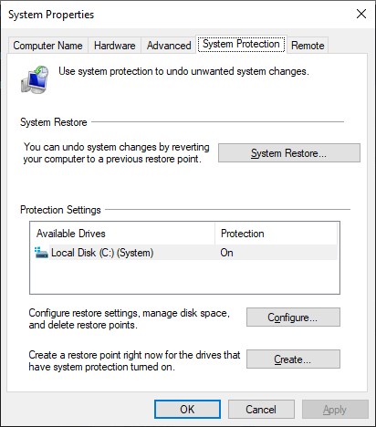
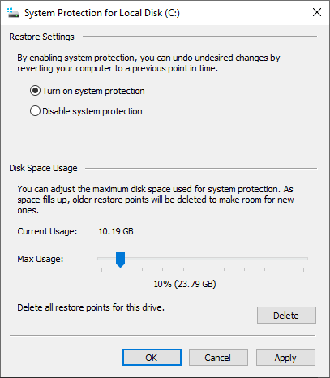
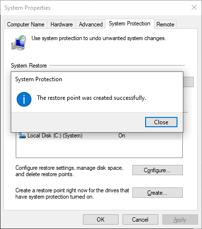
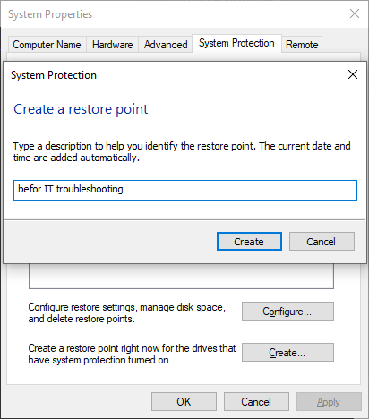
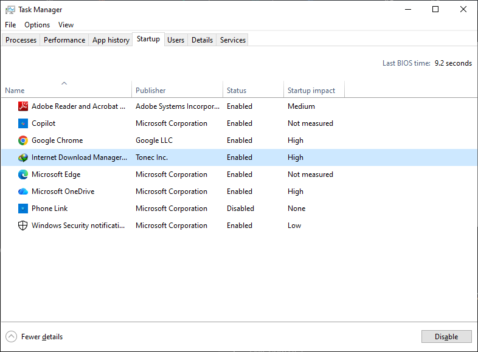
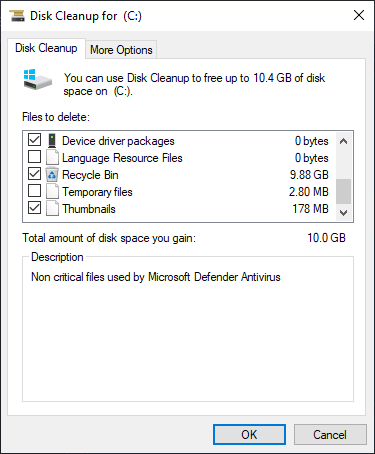

شبیهسازی یک روز کاری تکنسین IT
Final IT Support Project — عیبیابی شش مشکل همزمان یک سیستم تحویلی و تهیه گزارش نهایی برای مدیر
01 / هدف مأموریت
این پروژه نهایی، مهارتهای دوره را در یک سناریوی واحد و واقعی کنار هم میگذارد: در روز اول کار بهعنوان تکنسین IT یک شرکت، سیستمی به من تحویل داده میشود که کاربر از آن شکایت دارد. هدف این است که برای هر مشکل، ابزار مناسب تشخیص انتخاب شود، علت محتمل بر پایه مفاهیم درس تحلیل شود، راهحل مرحلهبهمرحله و ایمن ارائه شود و در پایان یک گزارش روشن و قابلفهم برای مدیر غیرفنی نوشته شود.
02 / سناریو و ابزارهای مورد استفاده
سناریو: سیستمی تحویل داده شده که کاربر از آن شکایت دارد و همزمان شش مشکل دارد:
- سیستم بهطور کلی کند است.
- تعداد زیادی برنامه در Startup اجرا میشود.
- DNS بهدرستی کار نمیکند و بعضی سایتها باز نمیشوند.
- فضای درایو C تقریباً پر شده است.
- یک Driver مشکل دارد (علامت هشدار در Device Manager).
- یک برنامه خاص اصلاً اجرا نمیشود.
ابزارهای بهکار رفته:
- Task Manager: بررسی مصرف منابع، فرایندهای در حال اجرا و تب Startup.
- Command Prompt (CMD): دستورهای شبکه مانند ping، nslookup و ipconfig برای عیبیابی DNS.
- Device Manager: بررسی وضعیت و بهروزرسانی یا بازگردانی درایورها.
- Disk Cleanup: آزادسازی فضای درایو C.
محیط اجرا: ویندوز ۱۰ یا ۱۱ با دسترسی Administrator در موارد لازم.
03 / مراحل انجام کار
جریان کلی کار که برای هر یک از شش مشکل تکرار میشود:
- تشخیص مشکل: برای هر شکایت، مشخص میکنیم دقیقاً با چه ابزاری مشکل قابل تشخیص است.
- انتخاب ابزار مناسب: از میان ابزارهای فصلهای مربوطه (Task Manager، CMD و دستورهای شبکه، Device Manager، Disk Cleanup) ابزار درست را انتخاب می کنیم.
- پیدا کردن علت: برای هر مشکل یک علت محتمل بر پایه مشاهدات و مفاهیم کارگاه می نویسیم.
- ارائه راهحل: راهحل هر مشکل را مرحلهبهمرحله مینویسیم و قبل از مراحل حساس (Disk یا Registry) هشدار ایمنی را رعایت میکنیم.
- نوشتن گزارش: یک گزارش نهایی شبیه گزارش واقعی یک تکنسین برای مدیر آماده میشود، شامل خلاصه مشکلات، اقدامات انجامشده و توصیههای آینده.
ساخت نقطه بازیابی پیش از شروع عیبیابی
Restore Point تصویری از تنظیمات سیستم، درایورها و Registry در یک لحظه است. اگر تغییری (مثل نصب درایور یا ویرایش Registry) مشکلساز شد، میتوان سیستم را به همان نقطه برگرداند. فایلهای شخصی کاربر با این کار پاک نمیشوند و بازگردانی نیز آنها را برنمیگرداند؛ بنابراین این روش جایگزین Backup نیست.
- از منوی Start عبارت Create a restore point را جستجو و باز میکنیم (یا SystemPropertiesProtection را در Win + R اجرا میکنیم). پنجره System Properties با تب System Protection باز میشود.
- در بخش Protection Settings، درایو C: را انتخاب میکنیم و وضعیت Protection را بررسی میکنیم.
- اگر Protection روی Off بود، روی Configure میزنیم، گزینه Turn on system protection را انتخاب میکنیم، حداکثر فضای مصرفی را روی مقدار کوچکی (مثلاً ۵ تا ۱۰ درصد) تنظیم میکنیم و OK میزنیم.
- روی دکمه Create کلیک میکنیم.
- یک نام توصیفی وارد میکنیم، مثلاً Before-IT-Troubleshooting (تاریخ و ساعت بهصورت خودکار اضافه میشود) و دوباره Create را میزنیم.
- چند لحظه صبر میکنیم تا پیام The restore point was created successfully نمایش داده شود و سپس Close میزنیم.
روش بازگردانی (در صورت بروز مشکل): در همان تب System Protection روی System Restore میزنیم، نقطه ساختهشده را انتخاب میکنیم و مراحل را تا Finish ادامه میدهیم؛ سیستم ریاستارت میشود و به آن وضعیت برمیگردد. اجرای مستقیم این ابزار با دستور rstrui.exe هم ممکن است.
روش خط فرمان (اختیاری): PowerShell را با Run as administrator باز میکنیم و اجرا میکنیم:
ویندوز بهطور پیشفرض اجازه نمیدهد در هر ۲۴ ساعت بیش از یک Restore Point خودکار از این طریق ساخته شود؛ اگر پیام خطا یا هشدار آمد، از روش گرافیکی بالا استفاده میکنیم.




04 / یافتهها و تحلیل فنی
جدول زیر برای هر مشکل، ابزار تشخیص و علت محتمل را خلاصه میکند.
| مشکل | ابزار تشخیص | علت محتمل |
|---|---|---|
| کندی کلی سیستم | Task Manager (تب Processes و Performance) | مصرف بالای CPU، RAM یا Disk توسط برنامهها و فرایندهای پسزمینه |
| برنامههای زیاد در Startup | Task Manager (تب Startup) | برنامههایی که هنگام نصب خود را به راهاندازی ویندوز اضافه کردهاند |
| DNS و باز نشدن سایتها | CMD (ping، nslookup، ipconfig) | کش DNS خراب یا آدرس DNS نادرست |
| پر شدن درایو C | Disk Cleanup · Storage settings | فایلهای موقت، باقیمانده بهروزرسانیها، سطل بازیافت و دانلودهای حجیم |
| هشدار Driver | Device Manager | درایور نصبنشده، ناسازگار یا آسیبدیده (مثلاً پس از یک بهروزرسانی) |
| اجرا نشدن یک برنامه | Task Manager · بررسی پیام خطا | فرایند معلق در پسزمینه، نبود مجوز، ناسازگاری یا نصب آسیبدیده |
- چند مشکل به هم مرتبطند: پر بودن درایو C و تعداد زیاد برنامههای Startup میتوانند خودشان به کندی کلی منجر شوند؛ بنابراین ترتیب رفع مشکل اهمیت دارد.
- در عیبیابی DNS، آزمایش پینگ به یک آدرس IP (مثل 8.8.8.8) و پینگ به یک نام دامنه تفاوت را نشان میدهد: اگر IP جواب دهد ولی نام دامنه نه، مشکل از DNS است و نه از اتصال اینترنت.
- بخش اصلی تحلیل، تفکیک «علامت» از «علت» است؛ مثلاً کندی علامت است و برنامههای پرمصرف یا Startup علت.
05 / مشکلات و راهحلها
ابزار: Task Manager
- کلیدهای Ctrl + Shift + Esc را فشار میدهیم.
- در تب Processes با کلیک روی ستونهای CPU، Memory و Disk، فرایندها را بر اساس بیشترین مصرف مرتب میکنیم.
- در تب Performance نمودارها را بررسی میکنیم؛ مصرف نزدیک به ۱۰۰٪ و ادامهدار نشانه فشار روی آن منبع است.
- برنامههای غیرضروری و پرمصرف را با End task میبندیم (فرایندهای سیستمی بسته نمی شوند).
- در صورت مشکوک بودن فرایند، اسکن کامل Windows Security را اجرا میکنیم و سپس سیستم را ریاستارت میکنیم.

ابزار: Task Manager (تب Startup)
- در Task Manager وارد تب Startup میشویم.
- برنامههایی را که ستون Startup impact آنها High است شناسایی میکنیم.
- برنامههای غیرضروری (مثل ابزارهای بهروزرسانی، پیامرسانها و لانچرها) را با Disable غیرفعال میکنیم.
- آنتیویروس و برنامههای سیستمی را غیرفعال نمیکنیم. این تغییر قابل بازگشت است و با Enable میتوان آن را برگرداند.
- سیستم را ریاستارت میکنیم و سرعت بالا آمدن ویندوز را بررسی میکنیم.

ابزار: Command Prompt
- CMD را اجرا میکنیم. ابتدا اتصال پایه را با پینگ به یک IP میسنجیم و سپس با پینگ به یک نام دامنه مقایسه میکنیم.
- اگر پینگ IP موفق بود ولی نام دامنه شناخته نشد، مشکل از DNS است. با nslookup بررسی میکنیم.
- کش DNS را پاک میکنیم و تنظیمات IP را بررسی میکنیم.
- اگر مشکل ادامه داشت، آدرس سرور DNS را در تنظیمات آداپتور شبکه (Properties → IPv4) روی یک DNS معتبر مثل 8.8.8.8 یا 1.1.1.1 تنظیم میکنیم.
- در پایان دوباره چند سایت را آزمایش میکنیم.
ابزار: Disk Cleanup
- با Win + R دستور cleanmgr را اجرا میکنیم و درایو C را انتخاب میکنیم.
- گزینه Clean up system files را میزنیم تا موارد بیشتر مانند فایلهای بهروزرسانی ویندوز هم دیده شوند.
- موارد امن مثل Temporary files، Temporary Internet Files، Thumbnails و Recycle Bin را تیک میزنیم.
- پس از تأیید، پاکسازی انجام میشود و فضای آزادشده را ثبت میکنیم.
- برای یافتن فایلهای حجیم دیگر، از Settings → System → Storage استفاده میکنیم و برنامههای بلااستفاده را Uninstall میکنیم.


ابزار: Device Manager
- با Win + X گزینه Device Manager را باز میکنم.
- دستگاهی را که علامت مثلث زرد هشدار دارد پیدا میکنیم و روی آن دوبار کلیک میکنیم تا پیام وضعیت و کد خطا را بخوانیم.
- از تب Driver گزینه Update driver را میزنم.
- اگر مشکل پس از یک بهروزرسانی شروع شده بود، گزینه Roll Back Driver را امتحان میکنیم.
- در صورت ادامه مشکل، دستگاه را Uninstall device میکنیم و با Scan for hardware changes اجازه میدهم ویندوز دوباره آن را نصب کند، یا درایور رسمی را دستی نصب میکنیم.
ابزار: Task Manager و بررسی پیام خطا
- پیام خطای دقیق برنامه را یادداشت میکنیم و در Task Manager(Ctrl + Shift + Esc) بررسی میکنیم که فرایند قبلی همان برنامه در پسزمینه گیر نکرده باشد (در صورت وجود، End task).
- برنامه را با Run as administrator اجرا میکنم.
- در Properties برنامه، تب Compatibility را امتحان میکنیم (اجرا در حالت سازگاری).
- مطمئن میشوم آنتیویروس یا SmartScreen برنامه را مسدود نکرده است.
- در صورت ادامه مشکل، برنامه را Uninstall و دوباره از نسخه سالم نصب میکنیم.
06 / گزارش نهایی برای مدیر
موضوع: گزارش بررسی و رفع مشکلات سیستم تحویلی کاربر
خلاصه: سیستم با شش مشکل همزمان تحویل داده شد. علتها شناسایی و اقدامات اصلاحی انجام شد. مشکلات اصلی به شلوغی منابع، تنظیمات شبکه و نگهداری نشدن سیستم مربوط بودند.
| مشکل | توضیح ساده | اقدام انجامشده | وضعیت |
|---|---|---|---|
| کندی سیستم | چند برنامه همزمان منابع کامپیوتر را مصرف میکردند | بستن برنامههای اضافه و بررسی بدافزار | حل شد |
| روشن شدن کند | برنامههای زیادی خودکار با ویندوز شروع میشدند | غیرفعال کردن برنامههای غیرضروری Startup | حل شد |
| باز نشدن سایتها | سیستم نمیتوانست نام سایتها را به آدرس تبدیل کند (مشکل DNS) | پاک کردن کش DNS و تنظیم DNS معتبر | حل شد |
| پر بودن درایو C | فایلهای موقت و غیرضروری فضا را گرفته بودند | پاکسازی با Disk Cleanup و حذف برنامههای بلااستفاده | حل شد |
| هشدار درایور | نرمافزار ارتباط ویندوز با یک قطعه مشکل داشت | بهروزرسانی یا نصب مجدد درایور رسمی | حل شد |
| برنامه اجرا نمیشد | برنامه یا فرایند قبلی آن دچار مشکل شده بود | بستن فرایند معلق، اجرای مدیریتی و در صورت نیاز نصب مجدد | حل شد |
توصیههای آینده:
- پاکسازی دورهای دیسک (مثلاً ماهی یک بار) و نظارت بر فضای آزاد درایو C.
- محدود نگهداشتن برنامههای Startup و نصب نکردن نرمافزارهای غیرضروری.
- بهروز نگهداشتن ویندوز و درایورها از منابع رسمی.
- تهیه نسخه پشتیبان منظم از دادههای مهم.
- آموزش کوتاه به کاربر درباره نصب برنامههای مطمئن و گزارش سریع مشکلات.
07 / جمعبندی و آموختهها
این پروژه نشان داد که عیبیابی در کار واقعی، ترکیبی از انتخاب ابزار درست، تحلیل علت و اجرای ایمن راهحل است. در چند دقیقه میتوان با Task Manager منبع کندی را یافت، با CMD مشکل DNS را از مشکل اتصال جدا کرد، با Device Manager وضعیت سختافزار را سنجید و با Disk Cleanup فضا آزاد کرد.
مهمترین نکتهای که آموختم این است که بسیاری از مشکلها به هم مرتبطند و رعایت اصول ایمنی (Restore Point، Backup از Registry و منبع رسمی درایور) به همان اندازه خود راهحل مهم است. همچنین نوشتن گزارش ساده و شفاف برای مدیر غیرفنی بخشی جداییناپذیر از کار یک IT Support است.